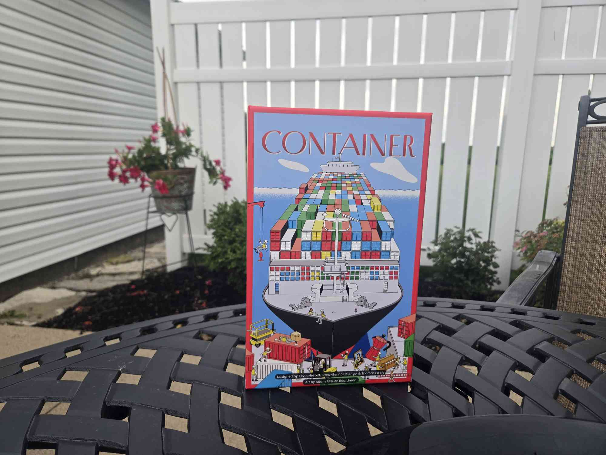
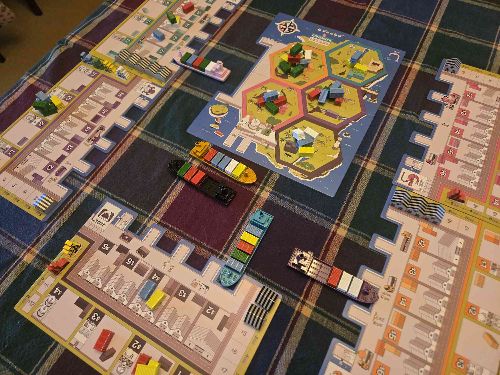
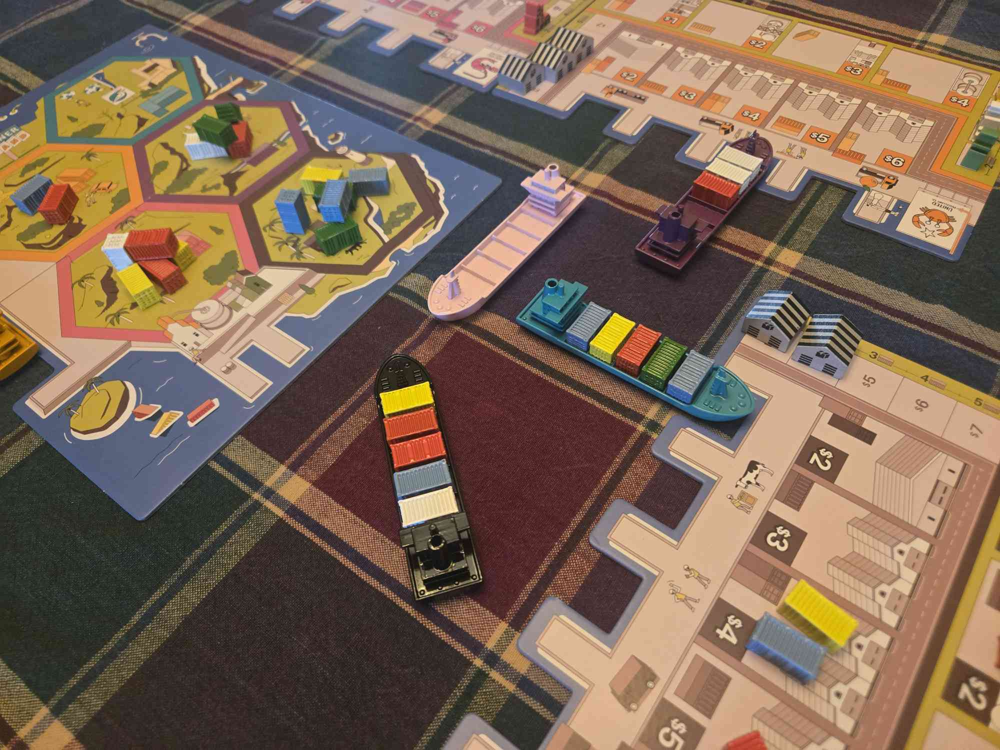
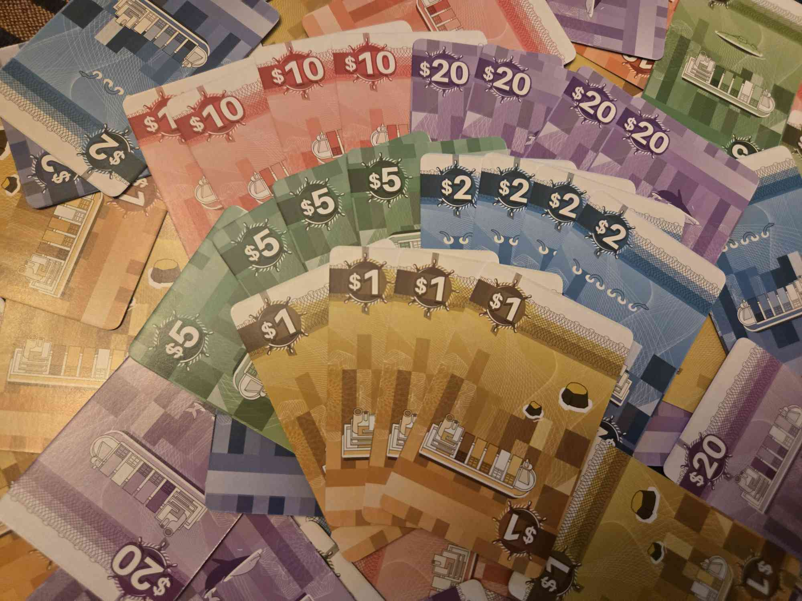
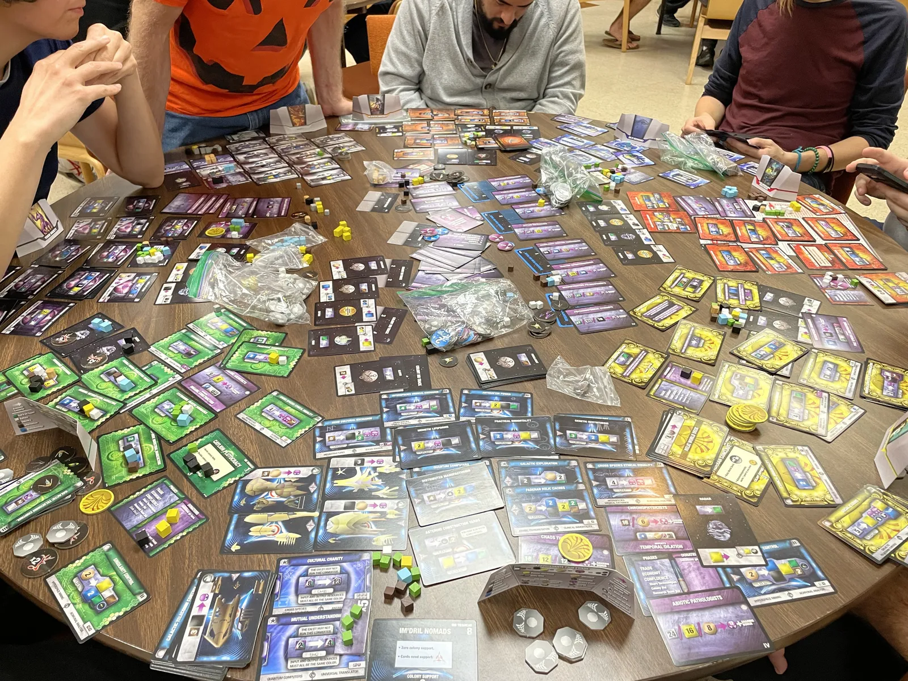
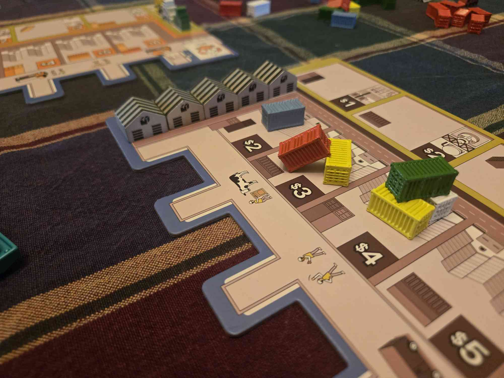
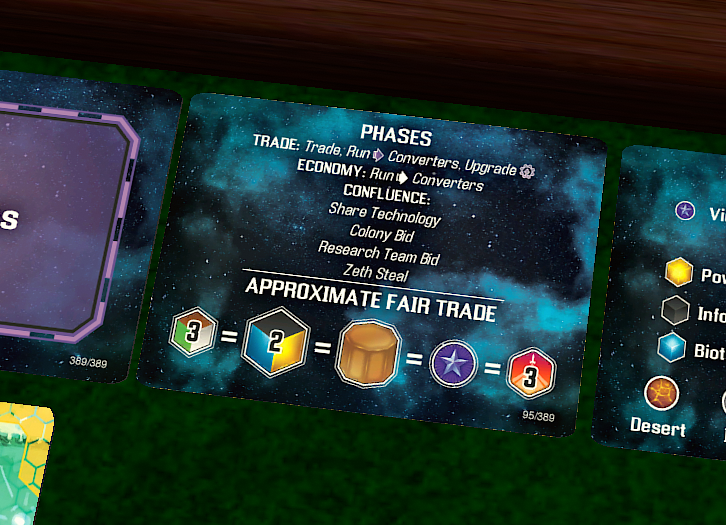
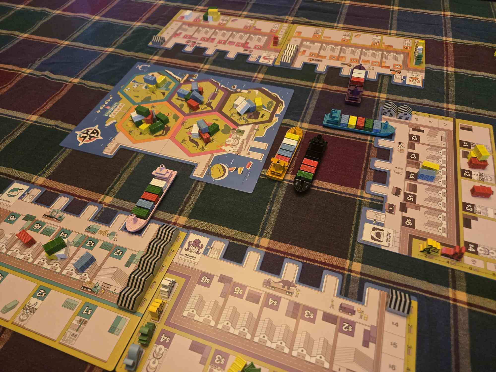
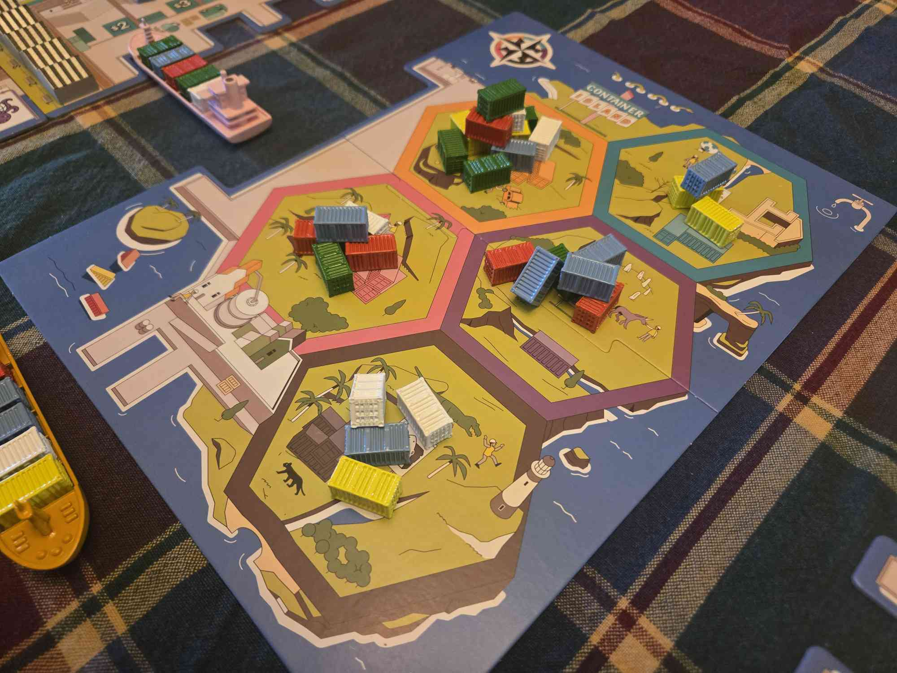

REMEMBER WHAT THEY TOOK FROM YOU
(10 min. read)
When you buy something in Monopoly where does the money go? Who gets it? Some unknown real estate company? Are you satisfied if the game just says “The Bank”? When you wrap around the board in Monopoly to collect $200 where does the money come from? Is it from this same vague “bank”.
The bank is obviously an abstraction of the market or something, but that's not all it does. The bank also works to erase player agency. Players can’t sell hotels to each other or empty the pool of money Chance Cards pull from. With a bank, these things are not in the players hands, but the designers. The designer can freely tweak and balance the game to fit their intended experience; not yours. They will decide how much money a hotel costs, they will choose the income the hotels give. Doesn’t that piss you off? Doesn’t that get you mad? They don't want you to see this! See what they are taking from you! Think of what games you could be playing, without those designers trying to smother your freedom! The designers who hang their entire game off a bank. I'll tell you what I think of those designers: they are cowards.

There are some designers that live a little more dangerously. They know that when you have a dog, you don't chain them up in a small area, you let the dog run free! You'll see its full potential when it's let off the leash to run as hard and fast as it wants. The designers who think this way dream of a wider world of unknown prices and opportunity, where the changing whim of a single player could send the whole table into a death spiral or a new explosion of economic activity. In these games the economy is a strange gumbo made by everyone at the table, a collaboration free to go in many directions. I am here to present one of these wild and dangerous games. You might ask ‘what is this game about?’ I’ll tell you; it’s about shipping cargo. Yeah I’m excited too.
Meet Container.

In this game players buy and sell crates from each other, but this ain’t no pussyfoot Monopoly with a ‘Go’ space. Nah, if you want to make money in this game, you need to find another player who will sell it to you, and another one that will buy it back from you at a higher price. The designers didn’t decide “these crates are $3” YOU did that. If you refuse to buy at $3 the other player might drop the price, or not. If you always buy at $3 they might raise the prices, or not. This game doesn’t shove players into specific behaviors, the game has built a world and asks players to find their place in it.

Ok but what’s all this buying and selling for? Glad you asked, players are trying to sell crates to the center island for points, and getting the crates there is not easy. First, crates need made in factories, then they need transported on trucks to warehouses, then they are picked up by ships, and then after a lengthy shipping time they arrive on the island where they are unloaded. So that’s about 4 hoops a crate needs to jump through for it to be scored. And here’s the kicker, at every step I just listed, players must buy and sell between to each other. The crate must move from one player's board, to another. Every step requires a transaction. No single player is allowed to bring a crate “from farm to table” by themselves.
Like I said this game doesn’t set prices for things, players do. You can imagine how player personality could radically change the market. My friend Jack is really stingy; he hates over-spending so if prices are high he might just refuse to buy anything. All the money sitting in his hand is effectively removed from the game. With less money available, everything will have to come down in price, not just the things he is holding out for. And the opposite is also true, my friend Ihor plays at a much higher velocity. He is always making high risk plays trying to surge as far ahead of everyone else as possible. He never hoards money, so the economy expands. With more money flowing around prices will keep climbing and climbing.

This all works because Container's economy is mostly “closed”; money doesn’t enter or leave, it only changes hands. Remember that in monopoly you’re always paying money to and taking income from the bank meanwhile in Container the money exclusively flows between players. Closed economies are frequently some of the most interesting game economies to examine, and a lot of that is how much they are player driven; where money ends up is based on who the players give it to. I will give a caveat that Container's economy isn't totally closed. Container is very smart about how its money enters or leaves, because it's all controlled by player personality and strategy, and it tends to come in giant bursts the whole table must react to.
Money leaves the game when players invest in infratructure: factories, warehouses, etc. This reduces the economy temporarily, but it will grow back due to increased efficiency. The real sauce is how new money enters. When players sell to the center island there's an auction for the goods where the delivering player not only receives the winning bid, but also takes that same amount from the bank. So if someone put an enormous bid on a really good shipment, it's possible the entire economy just expanded by like 25%. That's 25% growth, all in the hands of a single player. Will they freely spend it and make prices rise? Will they throw it all into infrastructure to keep the economy the same? It's all up to player decisions to shape the economy, even the parts where the closed system breaks. Also that auction isn't even a normal auction where players keep bidding each other up. It's a single round blind auciton; you have no idea what the other players are willing to pay. It's always immensely funny when we reveal the bids and everyone reveals small numbers like $4, $2, $6 and then one player just chucked in $28. It's so funny every time it happens.
The semi closed economy isn't the only reason I like Container though. I think in the designers made a lot of great choices to encourage a more chaotic economy. The next big piece of the pie is turn order.
Sidereal Confluence vs Container

Credit to @Cliffy73 on BoardGameGeek
Maybe the most beloved trading game of all time is Sidereal Confluence, and it’s obvious why people like it: Sidereal Confluence delivers on the promise of a truly open market. Every round there is a trading phase where every player literally stands up and starts running around the room making as many deals as possible. All the trades happen in real time, there's lots of yelling and frantic energy, with the right group it can be a really great time, but I don’t like it.
See, Sidereal Confluence really is a totally open market, players can talk and deal and trade with each other at any time, and when your market is totally open you remove all the hard edges. I’ve talked before about my love of miserable games, games where things don't always go according to plan, games that make your heart sink in despair, or skip a beat when you barely avoid disaster. Container is this sort of game, you can really be put in a corner in this game in a way you really can't in Sidereal Confluence because of Container's strict turn structure.

Look at this market in Container. Only one player has crates for sale, and the player after you in turn order really really wants to fill up their ship. Here's a cool thing you can you; you can buy the cheap crates and list your own crates for really high prices. What are they gonna do? Are they going to just pass their turn out of principle? You might identify this player doesn’t have any good actions available to them besides picking up crates. You only get so many turns in this game, you don’t want to waste them. They might just eat your giant costs because there is nothing better for them to do. If you tried to squeeze someone in Sidereal Confluence, someone else would jump in and compete with you so everything would end up getting sold for almost the fair market value.

That’s what a truly free and open market does: it finds the accurate price. And who wants a perfectly accurate price in a trading game? That’s not the fun part. What’s fun are the miserable points: being put over a barrel and trying to get out of it, or exploiting another vulnerable player for all they are worth. In Sidereal Confluence you just don’t get that much value per trade. The savviest trader in the world might be getting 5% or 10% extra value for every trade they do, but in Container a good player could double or triple the value they get from every trade because they can squeeze people against the game's hard edges. Ultimately these two games are about different things: Sidereal Confluence isn’t a game about making the best trades, it’s making the most. It's a game about who can be the loudest and talk the most. If you can make 100 trades, you'll beat the person who only made 80. Sidereal Confluence's market doesn't have the ridiculous booms or glorious busts, it doesn't have the desperation or the exploitation. In Sidereal Confluence the market is so open, that it feels lifeless.
Double or Nothing?

The last thing that makes this game really shine for me how hard holding a a lead can be. Let’s say you are winning early; what do you do? What is a ‘safe’ play that will let you just maintain your lead forever? I’ll give you a short answer: there isn’t one. Every option requires an investment; you have to buy something then sell it. A good play can look a lot like a bad one, and what looks like a safe play could fully ruin you. This is a recurring fact in many games I love; you are always on the brink of disaster. If you feel comfortable, that's when you need to be most on guard. There’s many ways other games give you this sense of unease. Container does it with one simple question: Double or Nothing? You have to buy from another player and hope to sell it at a profit. You always need to keep reinvesting, and every reinvestment has the potential to fail. If the wrong bet plays out poorly, it could send you all the way back down to the bottom.
A Small Criticism

I am going to briefly mention my biggest complaint with the game: the game is very simple. This is also its greatest strength. Even with its slow trickle of expansions over the decades the game is still very easy to learn. You can teach it in 5 minutes and play for hours. But, with a game so simple, games will start feeling samey after a while. Remember how I said earlier the game feels very different with different tables of players? The market is ultimately an averaging of every player's personality. The flipping is of course that the same players will keep finding the same level over and over. My group played this game a lot, but with the same people it felt very stale. I will also mention at the end here Tokyo Tsukigi Market by Jordan Draper. That game is much more complicated than Container and has lots of variance game-to-game. It feels like a kickstarter spiritual successor to Container in a good way. If you did click that link though, you saw that it's sadly out of print. Plus, all the Tabletop Simulator mods are broken. For what it's worth there are lots of print and play assets out there if you're very dedicated. I think the game is 100% worth it.
I really like Container, and despite it being out of print for a long time, it is currently in print. It makes me so happy that this game is on store shelves again. It’s one of the best games I’ve ever played and certainly my favorite trading game, alongside Tokyo Tsukigi Market. I highly recommend.